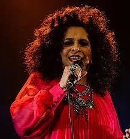

Melhores do MPB
Importância do MPB na ditadura militar
A importância da Música Popular Brasileira (MPB) durante a ditadura militar (1964-1985) foi sua atuação como um poderoso instrumento de resistência cultural e protesto, mesmo em meio à forte censura e repressão do regime.
Cantores MPB reconhecidos
Rita Lee
Rita Lee (1947-2023) foi uma cantora, compositora e multiartista brasileira, icônica do rock brasileiro e do Tropicalismo. Começou nos Mutantes e seguiu uma carreira solo de sucesso com a banda Tutti Frutti e, depois, com Roberto de Carvalho, seu parceiro de vida e música. Além da música, teve atuação na TV, no teatro e na literatura, sendo autora de livros e peças infantis. Destacou-se pelo irreverência, por ser uma defensora dos direitos das mulheres e por sua luta contra o câncer de pulmão, que a levou à morte em 2023.
Músicas
- Mania de você (1979)
- Composição: Rita Lee e Roberto de Carvalho
- Colombina (1997)
- Composição: Ed Motta e Rita Lee
- Agora só falta você (1975)
- Composição: Rita Lee e Carlini
Cazuza
Cazuza foi um poeta, letrista e cantor brasileiro, considerado um dos maiores ícones do rock nacional, que nasceu Agenor Miranda Araújo Neto em 1958 e faleceu em 1990 aos 32 anos, em decorrência da AIDS. Ele ganhou notoriedade como vocalista do Barão Vermelho, banda da qual se desvinculou para seguir carreira solo, emplacando sucessos como "Exagerado" e "O Tempo Não Para". Cazuza foi um dos primeiros artistas a assumir publicamente a doença no Brasil, quebrando tabus e se tornando um símbolo de coragem e luta contra o preconceito.Músicas
- Exagerado (1985)
- Composição: Cazuza, Ezequiel Neves e Leoni
- Malandragem (1994)
- Composição: Cazuza e Frejat
- Bete Balanço (1984)
- Composição: Cazuza e Frejat
Gal Costa
Gal Costa foi uma cantora brasileira ícone da Tropicália, conhecida por sua voz poderosa e por interpretar músicas de diversos compositores ao longo de sua carreira de mais de 50 anos. Ela começou a carreira em Salvador e se destacou com o movimento Tropicalista, participando do álbum manifesto e se tornando a voz do movimento após o exílio de Caetano Veloso e Gilberto Gil. Gal Costa lançou discos influentes como Índia e Fatal, fez parte do grupo Doces Bárbaros com Maria Bethânia, Gil e Caetano, e revelou novos talentos, como Luiz Melodia. Faleceu em 2022, deixando um legado duradouro na cultura brasileira.
Músicas
- Chuva de Prata (1984)
- Composição: Ed Wilson e Ronaldo Bastos
- Baby (1969)
- Composição: Caetano Veloso
- Aquarela do Brasil (1980)
- Composição: Ary Barroso